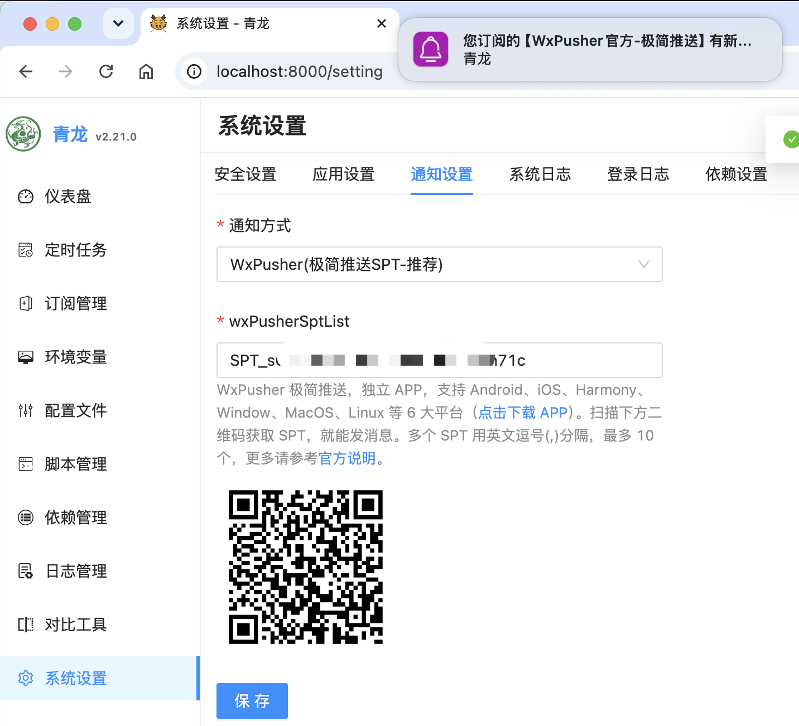
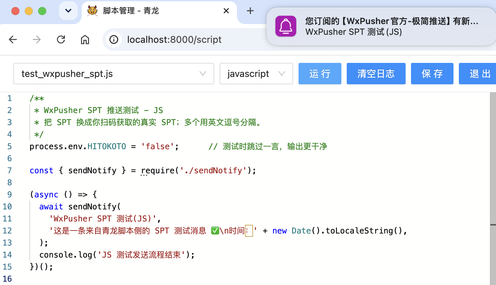

青龙面板使用 WxPusher 极简推送教程
把青龙面板的签到结果、数据同步、服务巡检、定时任务失败和服务器告警实时推送到手机与电脑。个人使用只需获取一个 SPT，无需创建应用或管理 UID。
版本要求：青龙面板从 v2.21.0 开始支持“WxPusher（极简推送 SPT）”。旧版本仍可使用 appToken、UID 等标准推送配置。
第一步：获取 SPT
打开极简推送 SPT 指南，扫描官方二维码并取得以 SPT_ 开头的令牌。SPT 相当于个人推送收件地址，不要提交到公开仓库或暴露在截图中。
第二步：在青龙面板配置
- 登录青龙面板，进入系统设置中的通知配置。
- 通知方式选择
WxPusher(极简推送SPT-推荐)。 - 在
wxPusherSptList中填写 SPT。 - 保存并点击测试通知，确认客户端收到消息。

通知少量维护者时，可用英文逗号分隔多个 SPT，单次最多 10 个：
SPT_xxx1,SPT_xxx2,SPT_xxx3脚本主动发送通知
需要让 JavaScript、Python 或 Shell 任务调用青龙通知模块时，配置环境变量：
export WXPUSHER_SPT_LIST="SPT_xxxxxxxxxxxxxxxxx"JavaScript 的 sendNotify(...) 和 Python 的 notify.send(...) 会读取该变量并调用极简推送接口。只使用 SPT 时，不建议同时配置 WXPUSHER_APP_TOKEN、WXPUSHER_TOPIC_IDS 和 WXPUSHER_UIDS，避免重复通知。

极简推送还是标准推送？
| 场景 | 建议 |
|---|---|
| 任务通知只发给自己或少数维护者 | 使用 SPT 极简推送 |
| 管理大量用户或 Topic 订阅者 | 使用标准推送 |
| 需要用户绑定、回调或消息产品 | 使用标准推送 |
常见问题
没有 WxPusher 极简推送选项怎么办？
确认青龙版本是否达到 v2.21.0。暂时不能升级时，可继续使用标准推送的 appToken、UID 或 Topic 配置。
测试通知没有收到怎么办？
检查 SPT 是否完整、多个 SPT 是否使用英文逗号、青龙服务器是否能访问 wxpusher.zjiecode.com，以及客户端登录状态和系统通知权限。
极简推送能管理用户或回调吗？
不能。需要用户关注、UID 回调、Topic 群发或订阅关系时，请使用标准推送。